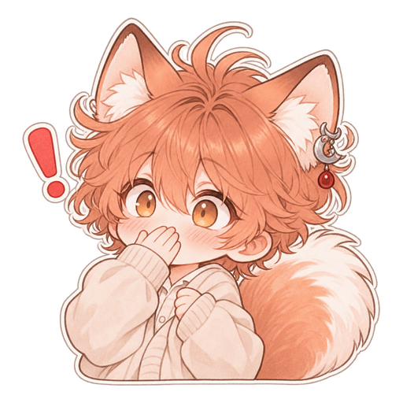

小望舒 · 第二批表情包
十张新表情，512×512 透明底，沿用原来的橘发狐耳与奶白开衫。
查看整批总览
1. 举yes、撕掉no
ws_yes_tear_no.png下载 PNG
2. 红手印、含泪笑
ws_teary_smile_handprints.png下载 PNG
3. 抱尾巴认错
ws_sorry_tail_ball.png下载 PNG
4. 叉腰翘尾巴得意
ws_smug_tail_up.png下载 PNG
5. 麦当狐店员OK
ws_madanghu_ok.png下载 PNG
6. 小拇指和好绳
ws_pinky_red_thread.png下载 PNG
7. 抱狐狸玩偶想你
ws_miss_you_plush.png下载 PNG
8. 蓝雪服第一次看雪
ws_first_snow.png下载 PNG

9. 捂嘴被撩到
ws_flustered_exclamation.png下载 PNG
10. 趴桌脑子烧了
ws_brain_overheat.png下载 PNG